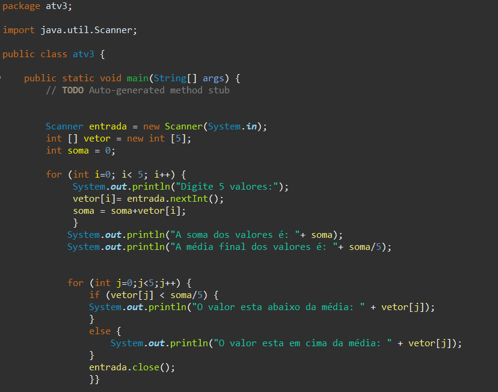
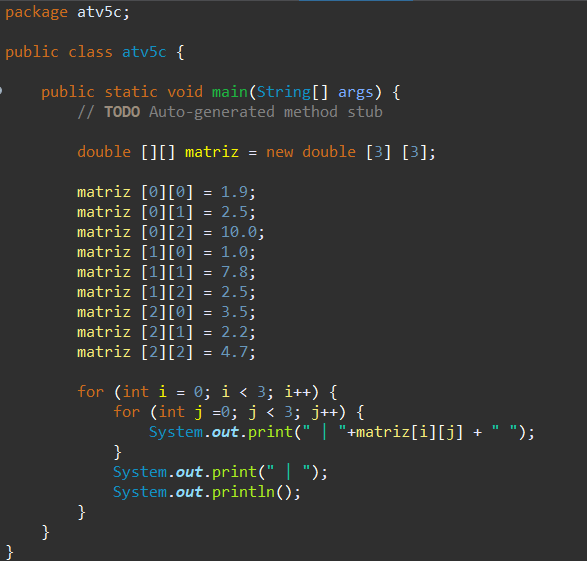
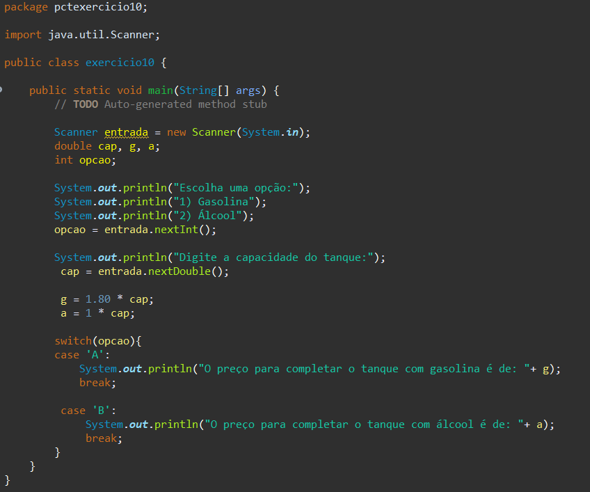
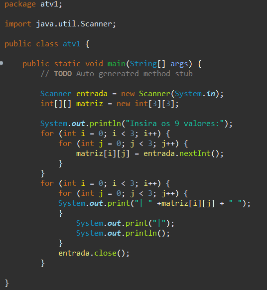

VETOR

São estruturas de dados que armazenam usualmente uma quantidade fixa de dados de um certo tipo.
MATRIZ

É possível criar um vetor de vetores onde cada elemento tem um tamanho diferente.
CASE

É uma estrutura de controle de fluxo que permite executar diferentes blocos de código com base em diferentes valores de entrada.
IF/ELSE
FOR

São utilizadas para executar diversas vezes um mesmo bloco de instruções.